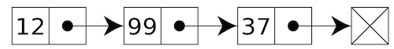

Lab 5: Linked Lists
Due at 11:59pm on Friday.
Starter Files
Download lab05.py.
- To receive credit for this lab, you must complete Questions 1, 2, 3, and 4.
- Questions 5 and 6 are extra practice. They can be found in the lab05-extra.py file. It is recommended that you complete these problems on your own time.
Linked Lists
Python has many built-in types of sequences: lists, ranges, and strings, to name a few. In this lab, we instead construct our own type of sequence called a linked list. A linked list is a simple type of sequence that is comprised of multiple links that are connected.

Each link is a pair where the first element is an item in the linked list,
and the second element is another link.
Constructors:
link(first, rest): Construct a linked list withfirstelement and the next linkrest.empty: The empty linked list.
Selectors
first(s): Returns the first element in the given linked lists.rest(s): Returns the rest of the linked lists.
Other
is_link(s): ReturnsTrueifsis a linked list.print_link(s): Prints out the linked lists.
We can construct the Linked list shown above by using the constructors. The
first element of this Linked list is 12 while the rest is another Linked
list that contains 99 and 37:
>>> x = link(12, link(99, link(37)))
>>> first(x)
12
>>> first(rest(x))
99
>>> first(rest(rest(x)))
37Notice that we can just use
link(37)insteadlink(37, empty). This is because the second argument of thelinkconstructor has a default argument ofempty.
Question 1: Length
Implement the len_link(lst) function, which calculates the length of a linked
list.
def len_link(lst):
"""Returns the length of the link.
>>> lst = link(1, link(2, link(3, link(4))))
>>> len_link(lst)
4
>>> len_link(empty)
0
"""
"*** YOUR CODE HERE ***"
if lst == empty:
return 0
return 1 + len_link(rest(lst))Test your code:
python3 -i lab05.py
python3 -m doctest -v lab05.py Question 2: Sum
Write a function that takes in a linked list lst and a function fn which
is applied to each number in lst and returns the sum.
def sum_linked_list(lst, fn):
""" Applies a function FN to each number in LST and returns the sum
of the resulting values
>>> square = lambda x: x * x
>>> double = lambda y: 2 * y
>>> lst1 = link(1, link(2, link(3, link(4))))
>>> sum_linked_list(lst1, square)
30
>>> lst2 = link(3, link(5, link(4, link(10))))
>>> sum_linked_list(lst2, double)
44
"""
"*** YOUR CODE HERE ***"
if lst == empty:
return 0
return fn(first(lst)) + sum_linked_list(rest(lst), fn)
# Iterative Solution
def sum_linked_list(lst, fn):
sum = 0
while lst != empty:
sum += fn(first(lst))
lst = rest(lst)
return sumTest your code:
python3 -i lab05.py
python3 -m doctest -v lab05.py Question 3: Map
Write map, which takes a one argument function and a linked list as
arguments, and returns a linked list of the results produced by applying the
procedure to each element in the list.
def map(fn, lst):
"""Returns a list of the results produced by applying f to each
element in lst.
>>> my_list = link(1, link(2, link(3, link(4, empty))))
>>> print_link(map(lambda x: x * x, my_list))
1 4 9 16
>>> pokemon = link('bulbasaur', link('charmander', link('squirtle', empty)))
>>> print_link(map(print, pokemon))
bulbasaur
charmander
squirtle
None None None
"""
"*** YOUR CODE HERE ***"
if lst == empty:
return empty
else:
return link(fn(first(lst)), map(fn, rest(lst)))Test your code:
python3 -i lab05.py
python3 -m doctest -v lab05.py Question 4: Insert
Implement the insert function that inserts an item at a specific
index in the linked list. If the index is greater than the current length,
you should insert the item at the end of the list.
Hint: This will be much easier to implement using recursion, rather than using iteration!
Note: We are not actually inserting the item into the original linked list. Instead, we are creating a copy of the original linked list, but with the provided item added at the specified index. The original linked list stays the same.
def insert(lst, item, index):
""" Returns a link matching lst but with the given item inserted at the
specified index. If the index is greater than the current length, the item
is appended to the end of the list.
>>> lst = link(1, link(2, link(3)))
>>> new = insert(lst, 9001, 1)
>>> print_link(new)
1 9001 2 3
"""
"*** YOUR CODE HERE ***"
if lst == empty:
return link(item, empty)
elif index == 0:
return link(item, lst)
else:
return link(first(lst), insert(rest(lst), item, index-1))Test your code:
python3 -i lab05.py
python3 -m doctest -v lab05.py Extra Questions
The following questions are for extra practice — they can be found in the the lab05-extra.py file. It is recommended that you complete these problems on your own time.
Question 5: DNA Sequence Matching
The mad scientist John Harvey Hilfinger has discovered a gene that compels people to enroll in CS2021. You may be afflicted!
A DNA sequence is represented as a linked list of elements A, G, C or
T. This discovered gene has sequence C A T C A T. Write a
function has_2021_gene that takes a DNA sequence and returns whether it
contains the 2021 gene as a sub-sequence.
First, write a function has_prefix that takes two linked lists, s and
prefix, and returns whether s starts with the elements of prefix. Note
that prefix may be larger than s, in which case the function should return
False.
def has_prefix(s, prefix):
"""Returns whether prefix appears at the beginning of linked list s.
>>> x = link(3, link(4, link(6, link(6))))
>>> print_link(x)
3 4 6 6
>>> has_prefix(x, empty)
True
>>> has_prefix(x, link(3))
True
>>> has_prefix(x, link(4))
False
>>> has_prefix(x, link(3, link(4)))
True
>>> has_prefix(x, link(3, link(3)))
False
>>> has_prefix(x, x)
True
>>> has_prefix(link(2), link(2, link(3)))
False
"""
"*** YOUR CODE HERE ***"
if prefix == empty:
return True
elif s == empty:
return False
else:
return first(s) == first(prefix) and has_prefix(rest(s), rest(prefix))Test your code:
python3 -i lab05.py
python3 -m doctest -v lab05.py Next, write a function has_sublist that takes two linked lists, s and
sublist, and returns whether the elements of sublist appear in order
anywhere within s.
def has_sublist(s, sublist):
"""Returns whether sublist appears somewhere within linked list s.
>>> has_sublist(empty, empty)
True
>>> aca = link('A', link('C', link('A')))
>>> x = link('G', link('A', link('T', link('T', aca))))
>>> print_link(x)
G A T T A C A
>>> has_sublist(x, empty)
True
>>> has_sublist(x, link(2, link(3)))
False
>>> has_sublist(x, link('G', link('T')))
False
>>> has_sublist(x, link('A', link('T', link('T'))))
True
>>> has_sublist(link(1, link(2, link(3))), link(2))
True
>>> has_sublist(x, link('A', x))
False
"""
"*** YOUR CODE HERE ***"
if has_prefix(s, sublist):
return True
elif s == empty:
return False
else:
return has_sublist(rest(s), sublist)Test your code:
python3 -i lab05.py
python3 -m doctest -v lab05.py Finally, write has_2021_gene to detect C A T C A T within a linked list
dna sequence.
def has_2021_gene(dna):
"""Returns whether linked list dna contains the CATCAT gene.
>>> dna = link('C', link('A', link('T')))
>>> dna = link('C', link('A', link('T', link('G', dna))))
>>> print_link(dna)
C A T G C A T
>>> has_2021_gene(dna)
False
>>> end = link('T', link('C', link('A', link('T', link('G')))))
>>> dna = link('G', link('T', link('A', link('C', link('A', end)))))
>>> print_link(dna)
G T A C A T C A T G
>>> has_2021_gene(dna)
True
>>> has_2021_gene(end)
False
"""
"*** YOUR CODE HERE ***"
cat = link('C', link('A', link('T')))
catcat = link('C', link('A', link('T', cat)))
return has_sublist(dna, catcat)Test your code:
python3 -i lab05.py
python3 -m doctest -v lab05.py Note: Subsequence matching is a problem of importance in computational biology.
Question 6: Count Change (with Linked Lists!)
A set of coins makes change for n if the sum of the values of the
coins is n. For example, if you have 1-cent, 2-cent and 4-cent
coins, the following sets make change for 7:
- 7 1-cent coins
- 5 1-cent, 1 2-cent coins
- 3 1-cent, 2 2-cent coins
- 3 1-cent, 1 4-cent coins
- 1 1-cent, 3 2-cent coins
- 1 1-cent, 1 2-cent, 1 4-cent coins
Thus, there are 6 ways to make change for 7. Write a function
count_change that takes a positive integer n and a linked list of
the coin denominations and returns the number of ways to make change
for n using these coins:
def count_change(amount, denominations):
"""Returns the number of ways to make change for amount.
>>> denominations = link(50, link(25, link(10, link(5, link(1)))))
>>> print_link(denominations)
50 25 10 5 1
>>> count_change(7, denominations)
2
>>> count_change(100, denominations)
292
>>> denominations = link(16, link(8, link(4, link(2, link(1)))))
>>> print_link(denominations)
16 8 4 2 1
>>> count_change(7, denominations)
6
>>> count_change(10, denominations)
14
>>> count_change(20, denominations)
60
"""
"*** YOUR CODE HERE ***"
if amount < 0 or denominations == empty:
return 0
elif amount == 0:
return 1
using_coin = count_change(amount - first(denominations), denominations)
not_using_coin = count_change(amount, rest(denominations))
return using_coin + not_using_coin